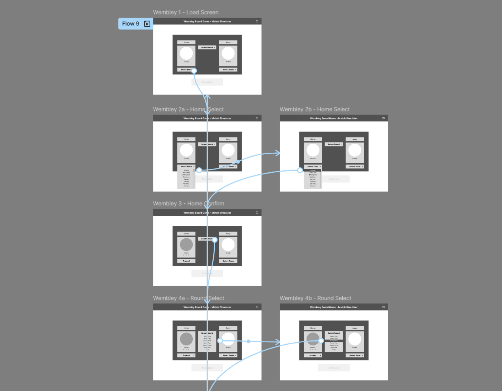
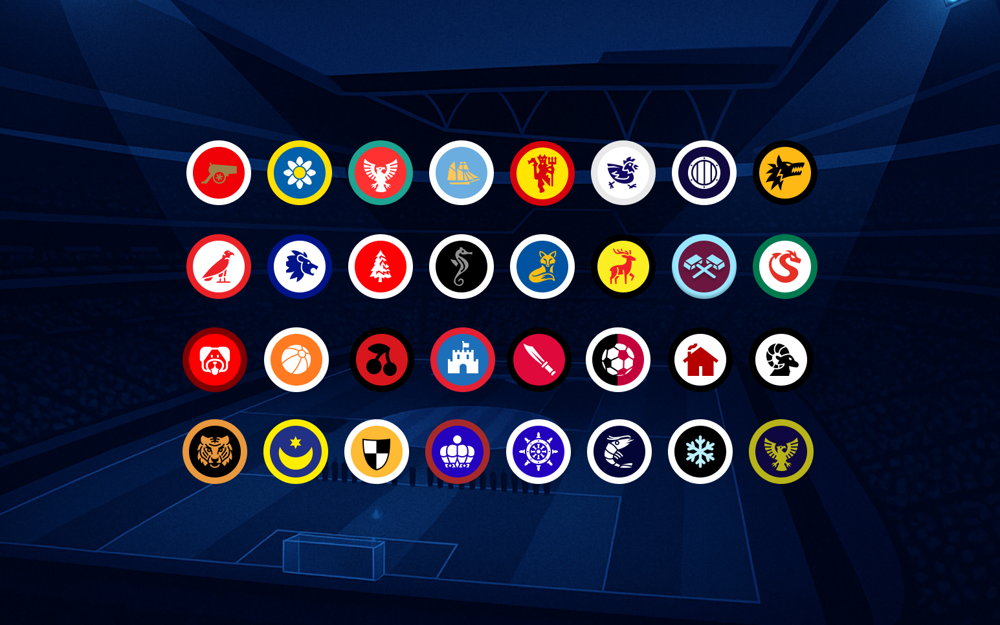
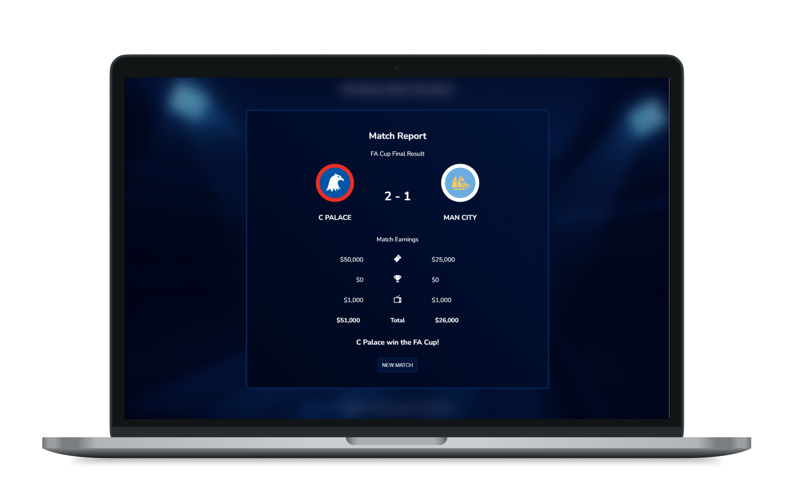

Segflow is a collection of web tools designed to solve real-world problems in grassroots sports and leisure, helping players and organisers streamline their processes.
Each tool is based on research into specific user flows—identifying friction points and designing accessible, focused alternatives. The process behind these solutions moves from sketch to wireframe to live, functional app, combining service design thinking with front-end development. Together, they reflect a hands-on approach to building digital tools that make everyday systems faster and easier to use.
Web App to replace office football predictions and improve user flow, designed for mobile
For the past couple of seasons I’ve taken part in a football predictor league for my team. It’s good fun and keeps things interesting when Boro’s season inevitably runs out of steam in the new year. This is all for a bit of fun but I thought I’d take a look at the process. Current Format Currently the organiser, Chris, sends out an email a couple of weeks before the season asking who’s interested. The email includes an Excel attachment with the fixtures on it. This needs to be downloaded, filled in, saved and returned. I normally pass this on to friends and family and in some cases help with their submissions. A couple of the issues I’ve came across: ‘I don’t have Microsoft Excel’ “All of the scores are formatted as dates” “You’ve emailed a file with no scores” One particularly analogue family member insists on opening the spreadsheet, writing all of the scores down on a piece of paper, taking a photo of the paper, texting it to me so I can fill in the spreadsheet and submit it. This resulted in them missing off two results and me having to call them on the day of the deadline to ask for them. This family member has finished above me in the past three seasons. What she lacks in IT skills she somehow makes up for in Championship football knowledge. My Challenge: I wanted to have a go at creating something better and although in its infancy, I have a working prototype which removes the reliance on Excel by turning this into a web app. Some of the requirements I wanted to build into this: Easy to Use - We have already established the digital literacy of my relatives. Fun - Move away from a spreadsheet and bring the game to life Create Value - With all of this data in one place there is opportunity for storytelling For now I also wanted to replicate the current output - an excel file emailed back to Chris, but this could develop based on his own needs. My Process: I had this idea a while back and started with sketching the user journey and wireframes. The wireframes just sat there without me having a real idea how to build this. High fidelity prototypes would be good but achieve very little. I saw a post a while ago that was essentially - “Generalists love AI because it stops the reliance on specialists.” Features: My favourite feature is the Season Summary tool, which gives an overview of the upcoming season based on the predictions. As a keen Fantasy Manager I do try and make stats driven decisions, so it’s nice to see if my results are overly positive or negative against my general optimism for the season. This also helps create a story in the players head and see how their predictions would play out - bringing a form to life. One feature I’ve thought about was adding current records to the background and telling the user if they have predicted this to be broken. For example, a 10-0 win over Sunderland would be our biggest ever league victory.
Web Tool designed to make running more accessible through age graded results and goal setting.
Further information about project 2 goes here.
Web Tool designed to help football match organisers create fair and balanced team sheets.
Further information about project 3 goes here.
Board game companion app designed for desktop
I researched, designed, and built a modern web app version of the Wembley 2016 board game using HTML, CSS, and JavaScript. The goal was to preserve the nostalgic value of the original while solving long-standing usability and relevance issues. The live site replaces outdated, often misplaced physical components with a dynamic, customisable digital experience.
Complexity: Cumbersome rules and fiddly mechanics (especially money distribution) slowed down gameplay and frustrated players.
Dependence on Physical Components: The game relied on custom dice and hard-to-find rule books—making it unplayable if anything was missing.
Unfair Mechanics: Dice outcomes felt unbalanced, and team strength lacked transparency, affecting fairness.
Outdated Elements: Team lineups became obsolete quickly due to promotion and relegation in real-world football.
User Experience First: Created wireframes focused on how players choose teams—prioritising alphabetical ordering, visual clarity, and intuitive layout.
Modern Interface: Drawing inspiration from football apps and live broadcasts, I introduced updated club badges, player ratings, and a clean, football-fan-friendly interface.
Enhanced Gameplay Context: Key gameplay variables—like international stars, game rules, and available funds—are clearly presented before kickoff to reduce confusion mid-game.
Customisable Mechanics: Dice rolls, team selection, and gameplay elements are now fully customisable, allowing for up-to-date seasonal versions and flexible rule sets.
“Love the modern feel, especially the updated club badges.”
“Made playing so much easier—no more fumbling with money or dice.”
“Feels like waiting for scores on the telly again—nostalgic but smoother!”